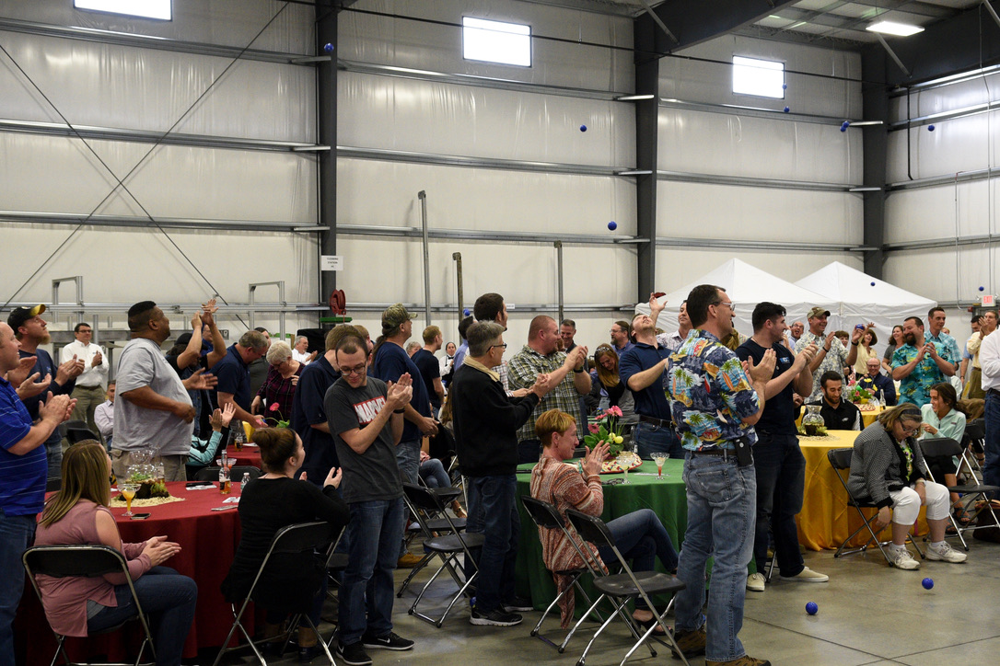

The Story
One company. Thirty years. The whole arc.
I spent my entire career at one company — NCC Automated Systems. Custom conveyor systems and integration work: mechanical design, systems engineering, PLC controls. Project-based, engineer-to-order, nothing cookie-cutter.
Along the way I bought it when it was insolvent, built four brands inside it to expand into new niches and higher-volume product lines, and eventually sold it to the largest company in our space. This is that story.
The arc
1994
The beginning
A $25,000 salary and a yellow paisley tie.
I joined Northeast Conveyor Corporation - NCC - straight out of the University of Delaware. First day: khakis, white button-down, yellow paisley tie. Nobody else wore ties. I also carried a briefcase well after it was cool to do so. It wasn't a great first impression.
I started in CAD layouts and estimates, then hit the road as a field sales engineer. We conveyed everything from airbag propellants to Uncrustables to golf balls. I worked hard, learned fast, and was competitive to a fault. I cared more about being right than being effective.
What I didn't know yet: hustle without relationships is just noise. I was making a lot of noise.
1994-1999
The troubled years
A company heading toward zero.
NCC grew fast from $4M to $12M, but it was smoke and mirrors. Fire-fighting was the operating model. The founder sold to an ownership group that didn't understand a project-based business.
2000-2005
The decline
The new company made us slower and dramatically more expensive. Sales cratered back toward $4M. People left. At one point I was the only salesperson.
I went over everyone's head to tell the parent company what was wrong. They listened, nodded, and did nothing - except put the company up for sale. A second acquisition followed. Two years later we were a million dollars insolvent.
The bones were good. The people were good. The culture, believe it or not, was good. That's what I kept coming back to.
2006
The bet
We mortgaged everything and bought it.
The ownership group was fractured and out of gas. We were 34, had under $50K in the bank, had just bought a house. We maxed every loan we could access and put an offer on the table with four non-negotiables: majority stake, full control, one partner exits, specific pricing on the second half.
They took it. Equal parts terrified and certain. If it failed, we'd lose the house and start over. If it worked - and we believed it would work - everything changed.
I paid roughly $500K for a company that was $1M in the hole. I later sold it for $40M. But that number isn't the point.
2006-2017
The build
From $6M to $40M - the hard way.
Twelve years of building. Stabilizing in year one. Implementing EOS as an operating system. Building a culture intentionally - open-book management, servant leadership, ownership mindset - long before the ESOP formalized it.
Along the way I built four brands from scratch inside NCC: Glide-Line, a modular conveyor platform; SideDrive, a category-defining conveyor technology; NutraPack Systems, purpose-built nutraceutical packaging lines; and Flexmove Americas, an international JV with Malaysian partners that became its own business with its own exit.
I described my career as one long string of dogfights. That's not wrong. But we won a lot of them.
2017
The ESOP
Cinco de Mayo. A hundred employees. The biggest surprise of their careers.
I called a mandatory all-hands meeting - families invited, a filmmaker present, an ice sculpture waiting under a blanket. And then I told a hundred employees that they were now owners of NCC. 42% of the company transferred to an employee trust, deliberately below strategic market value, because I believed an engaged team would outperform the discount.
It wasn't charity. It was the most strategically sound decision I made. It also happened to be the right human decision. Those two things don't always align. This time they did.
The announcement - Cinco de Mayo 2017

The moment - filmed live
2021
The exit
$40M. To a public company. Then two more years inside one.
NCC was acquired by ATS Automation - the largest company in our space. The sale closed at $40M. Every employee in the ESOP received their pro-rata share. Some used it for a down payment. Some paid off debt. Several are on track to retire as millionaires.
I know both sides of that table. That's not something you can study your way into.
2023
Retirement starts
Two years inside a public company.
I stayed two years post-acquisition - navigating public company governance, reporting into a new leadership team, learning how that world operates from the inside.
I learned a lot, including the fact that it wasn't the best spot for me at the time. Not only did the business need a different approach, I needed more freedom to do my best work.
The sendoff - filmed live
Now
What's next
Writing it down. Putting it to work. Helping others.
Having stepped away from day-to-day operations, I'm focused on three things professionally: finishing a leadership memoir called Fight to Serve - the longer version of this story - working with a small number of companies as a board member where my experience is genuinely useful, and sharing what I've learned with leaders who are still in the middle of it.
Not attending meetings. Contributing to outcomes.
"I spent thirty years swerving between two instincts - the no-holds-barred competitor and the quiet servant. That May afternoon proved they can share the same road. And in fact, make each other better."
Kevin Mauger - on the ESOP announcement, Cinco de Mayo 2017
What the story produced
A leadership philosophy
Thirty years of real decisions produced ten principles I'd bet on again. They live on The Bets page and in the book.
A board perspective
Every inflection point in this story is a situation a board eventually faces. I've navigated all of them from the inside.
A book in progress
Fight to Serve is the full version - honest, specific, and written for anyone who's wondered if you have to choose between fierce and kind.
The story is the credential.
If any part of this arc maps to what your company is navigating - let's talk about whether there's a fit.